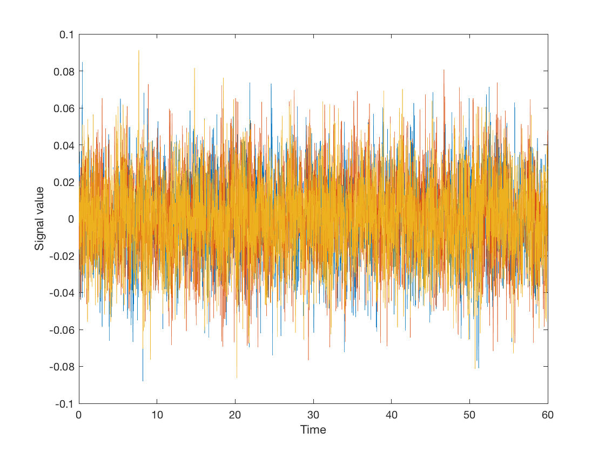

ROInets 1 - Introduction to orthogonalization
This example uses synthetic signals to illustrate the effect of orthogonalization.
Spatial leakage in the beamformer results in correlations between adjacent/nearby voxels being introduced, that are not the result of correlations in neural activity. As an approximation, this can be corrected for by removing all zero-lag correlations. Note that this does not eliminate correlations in the amplitude envelopes (although it does decrease them somewhat). By doing this, the remaining correlation is assumed to reflect genuine functional connectivity.
To demonstrate orthogonalization in practice, this example illustrates the use of the low-level ROInets function remove_source_leakage() which implements the core orthogonalization algorithms.
First, we generate a synthetic signal and plot it
Fs = 100; %Hz duration = 60; %s time = 0:1.0/Fs:duration; nSamples = length(time); b = fir1(1024, 0.5); nVoxels = 3; [ARfilterTerms, ARnoiseVar] = lpc(b, 7); % Generate data from a covariance matrix and smooth C = [1 -0.1 0.6 -0.1 1 0.3 0.6 0.3 1] * ARnoiseVar; u = chol(C)' * randn(nVoxels, nSamples); data = filter(1, ARfilterTerms, u.').'; figure('Name', 'Input data', 'Color', 'w'); plot(time.', data.'); xlabel('Time') ylabel('Signal value')
Our signal has 3 'voxels' and we will assign each to its own 'parcel'
spatialBasis = eye(3);
Notice that the signal has correlations between channels
corr(data')
ans =
1.0000 -0.0635 0.6104
-0.0635 1.0000 0.3233
0.6104 0.3233 1.0000
The remove_source_leakage() function takes in the data matrix, as well as the orthogonalization method. To apply symmetric orthogonalization, we can simply call:
data_orthog = ROInets.remove_source_leakage(data, 'symmetric');
Now, the channels have no static zero-lag correlation
corr(data_orthog')
ans =
1.0000 0.0001 -0.0001
0.0001 1.0000 0.0005
-0.0001 0.0005 1.0000
However, the amplitude of the orthogonalized signals is quite different to the original signals
std(data') std(data_orthog')
ans =
0.0218 0.0220 0.0221
ans =
0.0129 0.0129 0.0129
The 'closest' orthogonalization method also results in orthogonal signals, but iteratively rotates and scales the basis vectors to best preserve the original signals. As a result, the orthogonalized signals are still uncorrelated, but their amplitudes much better match the original signals
data_orthog_closest = ROInets.remove_source_leakage(data, 'closest');
corr(data_orthog_closest')
std(data_orthog_closest')
ans =
1.0000 0.0001 -0.0001
0.0001 1.0000 0.0005
-0.0001 0.0005 1.0000
ans =
0.0205 0.0216 0.0204